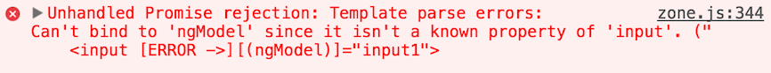
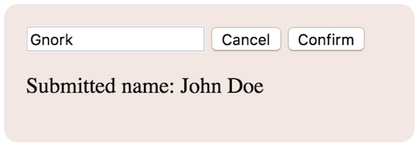

Composition
Combining componentsSections in this chapter
Child components
Spawning children
So, finally - how do we render one component from another in Angular? The answer has two parts:
- make sure the child component is visible to the parent from an
NgModuleperspective - include markup in the parent template that matches the child selector
Component selectors are mostly element types:
@Component({
selector: 'myCustomComp',
template: '...'
})
To use this component, our markup must contain:
<myCustomComp></myCustomComp>
But technically we can use any CSS selector, including targetting attributes like the built-in directives:
@Component({
selector: '[myCustomComp]',
template: '...'
})
<div myCustomComp></div>
But, as stated, element types are the most common.
Which incidentally means that usage of Angular components is identical to Web Components.
This opens some interesting possibilities, but we won't explore that further in this course.
It is also identical to the relation between the root component and the main index page! Our root components have all used this selector:
@Component({
selector: 'app',
template: '...'
})
...and in the main index.html files you find this:
<app>loading...</app>
Again, composition works in the exact same way.
See it in action in the Composition demo, or the Composition Scoped which uses components from different NgModules.
Btw, did you notice the style definition in the root in the demo?
:host /deep/ span {
border: 1px solid black; padding: 3px;
}
As you might guess, the /deep/ selector means we dig into the encapsulation of our children to be able to style them too.
Passing data
pouring down
Time to start exploring parent-child communication, and specifically, how parents give input to their children!
The syntax is actually rather ingenious - with an @Input decorator we can mark a property as an input:
class Child {
@Input() someProp
aPrivateProp
}
After having done so, the someProp property can be bound to in the parent template:
<child [someProp]="myVariable"></child>
We can also alias the property name if we for some reason want to have the input named differently:
class Child {
@Input('aliasedProp') someProp
}
<child [aliasedProp]="myVariable"></child>
And as the bound property is a normal class property, we can also use a setter:
class Child {
aPrivateProp: string
@Input() set exposedProp(fromMum){
this.aPrivateProp = fromMum
}
}
It looks exactly the same as before from the outside:
<child [exposedProp]="cleanYourRoom"></child>
You can see all three variants in action in the Child input demo.
If we tried to bind to aPrivateProp which hasn't been exposed via @Input, or a non-existent property, Angular would throw an error:

Notice how it points out the offending input with an [ERROR->] marker.
Interestingly, this is the exact same error we'd see for ngModel if we forgot the FormsModule!

That makes sense since native input elements have no ngModel prop.
But it also reveals some interesting facts:
- directives can have inputs too
- we have already been using inputs without knowing it!
For example, we use ngIf by feeding it an expression:
<div *ngIf="someFlag">
shown only if `someFlag` is truthy!
</div>
Obviously ngIf uses [ngIf] as selector, but if what we saw earlier is true, it must also define ngIf as an input!
And sure enough, in the source code we see this:
@Directive({selector: '[ngIf]'})
export class NgIf {
private _hasView: boolean = false;
constructor(...) {}
@Input()
set ngIf(condition: any) {
...
}
}
So the old AngularJS cliché still holds true;
Angular is built with Angular
Like in AngularJS, Angular defines a central infrastructure, and then uses that both to create built-in helpers and allow developer-made building blocks.
Btw, wanna now how to easily find the source code for some part of Angular? Easy:
- Go to the official API docs
- Type in the name of the part in the search field
- Click to get to the dedicated page
- Find the source link in the bottom-right corner
Receiving data
here you go
Time to explore the other side of parenthood - children output!
Let me guess - we mark child properties with an @Output decorator?
You've got it! :)
But still, there's far more to the story...
Because if we were just to expose a regular property...
class Child {
@Output() someProp = 'foo'
}
...how would we connect to that in the parent?
A naïve approach could be a simple two-way data binding through simply binding to a prop in the parent:
<child (someProp)='parentProp'></child>
But this would fall apart quickly. What if I don't want to store the value but simply act when something happens?
And how would I know when the value changes?
We've actually already seen output from a parent perspective when we learned about event handling!
There we were taught that for outputs we don't use template expressions but template statements!
<child (someProp)='catchOutput($event);'></child>
We also saw that in this statement we can access $event which contains the message from the child.
This makes sense - now I have code that triggers upon receiving the message, and I can do what I want.
And as you've already figured out, there's no difference to child component output and outputs from input elements.
Because the inputs are clad with the ngModel directive, who apparently are using @Outputs under the hood.
Again,
Angular is built with Angular
So, can you guess what @Outputs look like in children?
You've already seen the answer, way back in the beginning of the course...
Now we finally get to see the main reason why Angular needs RxJS - you see, outputs are implemented through streams!
Thinking about it this makes a whole lot of sense - streams are an asynchronous chain of events, which is exactly what child outputs are too!
In Angular this means that output properties are EventEmitters, which are streams that emit events of a given type:
@Output() whine = new EventEmitter<string>()
Using this the child will emit events to the parent:
this.whine.emit(this.msg);
See this in action in the Child output demo.
And, speaking on ngModel - if we were to peek at that source, what could we expect?
- it should have an
@InputnamedngModel - it should have an
@OutputnamedngModelChange(because of what the banana box syntax actually means) - it is likely very complex :P
And indeed, if we go look, that is exactly what we find!
Speaking of streams - we should also add that you can use them more heavily in your own code too.
For an example, check out the Submitname with Streams demo!
Passing elements
Here you go, my child
When we looked at composition, we noted how parents and children communicate.
But there is a scenario we haven't covered yet - what happens when we pass elements to a child?
<child>
<p>What will happen to me?</p>
</child>
Unless the child actively captures those elements, they will just disappear.
However the child can capture the elements by including this in its template:
<ng-content></ng-content>
See this in action in the Passing elements demo.
The child can also split the elements up and show them in different places using the select attribute on ng-content:
<ng-content select='header'></ng-content>
<ng-content select='footer'></ng-content>
See this in action in the Passing split elements demo.
A composition case study
Building a sharable component
In an Angular application components are your primary building block. It therefore stands to reason that you should consider each component API carefully:
- what
@Inputs does it need? - what
@Outputs does it provide?
To wrap our brains around this, let's do a small case study where we implement a stand-alone UI component meant to be integrated into other apps.
We'll be making a confirmation button!
It is meant to be used as a confirmation button in a form:

But of course it is not just a regular button: when the user clicks the button it should allow confirmation and cancel:

Only if the user chooses confirm should the parent be notified, otherwise it just reverts to the previous standby mode.
Additionally we should allow the parent to disable the button if whatever data we're confirming is invalid, for instance if the field is empty:

So let's consider the API for this! We'll need...
- an
@Outputto emit confirmations to - an
@Inputfor whether or not we're disabled
Internally we'll also need to track our current mode, which can be
- standby - showing submit button
- disabled - button should be greyed out
- confirm - showing confirm and cancel
So the map for the component would be something like this:

With our three modes in mind, we could implement the template like so:
<span *ngIf="mode !== 'confirm'">
<button (click)="maybe()" [disabled]="mode === 'disabled'">
Submit
</button>
</span>
<span *ngIf="mode === 'confirm'">
<button (click)="changedmymind()">Cancel</button>
<button (click)="yesimsure()">Confirm</button>
</span>
And here's the model to match that:
class ConfirmComponent {
mode: 'standby' | 'disabled' | 'confirm' = 'standby'
@Output() confirm = new EventEmitter<void>()
@Input() set disabled(bool: boolean){
this.mode = bool ? 'disabled' : 'standby'
}
maybe() { this.mode = 'confirm' }
changedmymind() { this.mode = 'standby' }
yesimsure() { this.confirm.emit(); this.mode = 'standby' }
}
Note how we're not explicitly tracking disabled, instead that input is a setter which manipulates mode accordingly:
@Input() set disabled(bool: boolean){
this.mode = bool ? 'disabled' : 'standby'
}
This pattern is somewhat common - an input doesn't have to be something we store, but can be used as a signal from the outside world.
You can try the component out in the Confirm demo.
And again, the point of this little case study was to highlight the component perspective. Think of your app in terms of components, and think carefully about how they interact.
There is an alternative solution using a lifecycle hook instead of a getter here: Confirm-Hook
Gamebook - composition
Matryoshka time
As before;
- copy the folder of the previous version,
- paste it right next to that version, and
- give it the name
FF05-components.
Let's clean up our code a bit by using the component composition techniques we just learned about!
Specifically, we're going to abstract out a SceneComponent from the AppComponent:
SceneComponent is given a scene object to render as input, and will output option objects when they are clicked.
In other words, we need to...
- aCreate a new
scene.tsfile forSceneComponent - bUpdate
AppComponentto use the new component - cUpdate the
NgModulein main.ts to expose the new component
Since scene.ts will contain much of what is now in app.ts, let's make a copy of app.ts and call it scene.ts!
In scene.ts we then need to...
- Change the selector to something else
- Change the component name to
SceneComponent - Remove game status, that will reside in
AppComponent. - Remove the
adventureimport, we don't need that - Change
sceneto be an@Input - Make the clickhandler an
@Output - Change the handler to emit clicked option objects
- Remove the adventure title from the template
Back in app.ts we must..
- Change the template to use the scene element
- But still show the adventure title above the scene
- Feed the scene element the current
scene - Connect the scene element output to the click handler
If you took on the reset option challenge in the earlier exercise, we need gameOver state in both AppComponent and SceneComponent, and probably a new Output from scene for the reset clicking.
Alternatively, have the reset button in the AppComponent template instead, separate from the scene options.
Finally, for SceneComponent to be available in the AppComponent template, we must add it to the Declarations array of our module in module.ts.
Now, after all that work, bundle and fire up the new version.
And if everything went according to plan, things will work exactly as before!